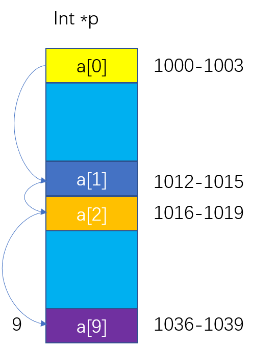
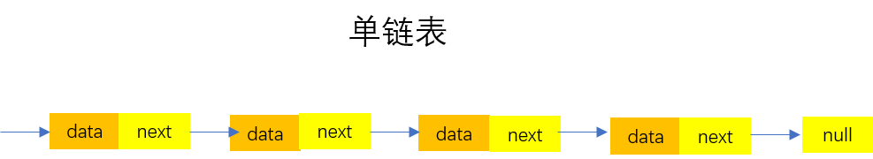
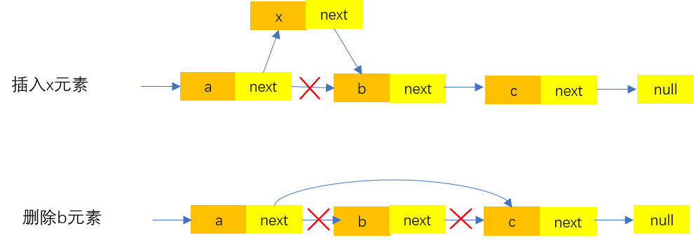

数组
什么是数组？数组是一种用连续的存储空间来存储相同数据类型的存储结构。理解连续的存储空间可以类比一层一层的楼梯，每个台阶都存储一个数据，连续的台阶就可以当作一个数组。
什么是数组？数组是一种用连续的存储空间来存储相同数据类型的存储结构。理解连续的存储空间可以类比一层一层的楼梯，每个台阶都存储一个数据，连续的台阶就可以当作一个数组。
大多数编程语言都会有数组的概念，并且大多数编程语言的数组的下标是从0开始的，理解数组的下标为什么以0开始时需要一些计算机基础的知识。
首先需要理解数组的在计算机中的内存地址，连续存储空间以及相同数据类型
以下公式是计算数组第K个位置的元素的地址，base_address是数组首个元素地址，type_size是数组中元素的数据类型大小。如果数组下标从1开始则第K个元素的地址计算操作就比数组下标是0多个减法的操作。这在最初的C语言中是会影响性能的，尤其是在数组这个数据结构经常使用的情况下。
1 | a[k]_address = base_address + k * type_size |
此外根据上面的公式也是可以得出一个结论的：数组支持随机访问，并且根据下标进行随机访问的时间复杂度是O(1)。那什么叫做随机访问，简单来说就是我有一个数组，然后你随便给我一个数字，只要数组存在这个下标的元素， 我都可以立即找到该元素并且花费的时间是O(1)。
首先看看数组的插入操作，
1 | void addElement(int[] arr, int element, int position){ |
上面代码只是简单的描述了数组的插入操作大致的逻辑，把一个元素插入到数组中主要有三种情况。第一种是插入到数组末尾，这时不需要什么额外的操作，直接arr[position] = element即可；第二种情况是插入到数组头部，这时候需要将所有的元素往后移动，这时候的时间复杂度和数组规模有关，假设数组规模大小n,这时候的时间复杂度是O(n)；第三种情况是插入到数组中间某个位置position,这时候需要将postition之后的元素都往后移一位，时间复杂度是O(n-postition)，也可以理解为是关于n的线性关系。从数学的角度分析，插入到数组每个位置的概率几乎一样，第一个位置需要移动n个元素，第二个位置需要移动n-1位，以此类推，最后一个位置不需要移动元素，平均下来，每个位置需要移动的元素（0+1+2+…n）/(n+1),仍然是关于n的线性关系。综上述数组的插入操作的平均时间复杂度是O(n)。
关于数组的删除操作其实也是类似的，删除操作的平均时间复杂度是O(n).
简单应用：关于数组的删除操作，如果删除操作太过于频繁，这时候为了减少该重复的操作，一般都会采用标记删除的方法。即把要删除的元素做一个标记，待到一定时机一次性删除本来应该删除的元素。



虽然链表的插入删除操作是比较高效的，但是查找任意一个元素却总是需要O(n)时间复杂度，n表示链表的长度大小。因为我们创建链表的时候只知道链表的头结点的地址，要找到其他结点的元素只能顺着头结点一个一个往下找。
指针或引用：理解指针的概念也很简单，首先你得知道变量是什么。变量可以是一个装有东西的箱子，里面可以是数字1也可以是字符串”hello”。而当箱子里面的东西是内存地址时，这个变量就可以称作指针(计算机可以通过内存地址来获取该内存地址上的内容)。
实现单链表：想要实现你的单链表，你首先需要理解单链表的构成，理解指针的概念，掌握一门编程语言的核心语法。接下来在编写单链表的过程中注意一些以下要点
练习 单链表反转 链表中环的检测 两个有序的链表合并 删除链表倒数第 n 个结点 求链表的中间结点。
LRU缓存淘汰算法：维护这样一个有序单链表，越靠近链表底部是越早之前访问的，当有一个新的数据data被访问时，我们从链表头部开始遍历链表
当掌握了单链表之后，比单链表复杂一点的就出现了。比如循环链表、双向链表等，故名思意，循环链表就是单链表基础上尾结点指向头结点，双向链表就是每个结点都有独特的前驱节点和后继结点。在你掌握了单链表之后，循环链表、双向链表以及双向循环链表的处理方法是类似的。
栈是一种操作受限的线性表，只能在一端对数据进行删除和插入操作。好比一叠盘子，最下面的盘子是最初放上去的，最上面的盘子是刚放上去的，我们拿走盘子一次只能拿走最上面的一个盘子，而不能从中间抽走任意一个盘子。先进者后出，后进者先出，这就是典型的栈结构。
栈的基本操作有入栈和出栈。而栈的实现方式有两者，一种是数组实现的顺序栈，另一种是链表实现的链式栈。
首先实现一个顺序栈：借助数组实现简单的入栈出栈操作，通过初始的数组的长度定义栈的容量，入栈时栈未满直接在增加一个数组元素，栈满就定义两倍大小的数组额外加些数据迁移工作即可，出栈只需要栈长度减一即可。
栈的基本操作的复杂度分析:出栈操作几乎不会涉及到任何数据的搬移操作，所以时间复杂度为O(1)。而入栈操作又分为栈满和栈未满情况，当栈未满时直接插入一个元素到栈顶即可，时间复杂度O(1)；另一种情况需要申请两倍原来大小的内存空间以及数据搬移操作。栈满的操作简称为顺序栈的动态扩容：重点理解数组实现的动态扩容的栈的复杂度分析(通过均摊时间复杂度分析，添加元素的均摊时间复杂度为O(1))。其实也很简单，假设栈初始大小n,一个周期定义为上一次扩容到下一次扩容，一次入栈的时间复杂度为O(1)。当n次入栈之后，栈满执行扩容操作，扩容操作需要申请内存以及数据搬移操作，时间复杂度为O(n),扩容结束之后，一个周期结束了。再仔细理一下，先执行n次O(1)次入栈操作，然后再执行一次O(n)操作，一次O(n)的操作均摊到n次上是不是就是常量级的时间复杂度呢，总的来说，入栈的均摊时间复杂度是不是就是常量级别的呢？
栈的应用： 理解 函数调用的栈以及JVM内存管理的堆栈 思考实现 表达式求值 括号匹配 包含括号的四则运算